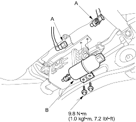

- The fuel filter should be replaced whenever the fuel pressure drops below the specified value (270-320 kPa, 2.8-3.3 kgf/cm2, 40-47 psi) after making sure that the fuel pump and the fuel pressure regulator are OK.
- Relieve fuel pressure (see page 11-130).
- Disconnect the hose and quick-connect fittings (A) (see page 11-293).

- Remove the fuel filter (B).
- Install the part in the reverse order of removal